Chapter 8 GitHub
In Chapter 7, we introduced Git, a very powerful tool for tracking changes and managing the development of our project. To collaborate with other colleagues, however, we need to share a remote repository. We can not share a Git repository on common cloud storage services (e.g., Google Drive or DropBox) as they do not have Git running behind.
To collaborate with other colleagues using remote repositories, we need dedicated hosting services such as GitHub, GitLab, or Bitbucket. These services are similar to each other and they provide almost the same set of tools. In this chapter, we focus on the use of GitHub.
8.1 Using GitHub
GitHub (https://github.com/) is the most popular service and it is commonly used to share open-source projects or as an online portfolio for developers. Using Github, we can share our projects allowing other users to easily navigate our code and documentation, report issues or contribute to the development by suggesting new features or other improvements.
In this section, we provide a brief guide on how to work with Git in combination with GitHub. For more details and advanced features, see the official documentation at https://docs.github.com/.
OSF and GitHub may seem very similar tools, as both services allow us to share files and keep track of the different file versions.
However, the OSF and GitHub are designed for different purposes:
- OSF aims to facilitate scientific research by allowing easy sharing of research materials.
- GitHub is a Git repository-hosting service with a focus on software development.
Therefore, there are some important differences. For example, considering file tracking, the OSF simply stores all previous versions of a file as new ones are uploaded. This is nothing like a true version control system like Git. Only Git allows to properly track changes and manage collaboration (branching and merging) during the development of a project. The OSF is not a Git repository-hosting service.
However, although OSF lacks the power of Git, it serves a more general purpose allowing to share files of any type (e.g., PDFs and images), does not require specific technical competencies to be used, and provides specific features useful in scientific research (e.g., getting a DOI or anonymization for review process). On the contrary, Git (and therefore GitHub) is recommended only for plain-text files and requires specific technical competencies.
To know more about the differences between OSF and GitHub, see https://ropensci.org/blog/2020/08/04/osf/ or “Sharing code” by Kubilius (2014) available at https://www.ncbi.nlm.nih.gov/pmc/articles/PMC4130510/.
Fortunately, we do not need to decide between the two, but we can connect our GitHub repository to an OSF project. To do that, follow the instructions at https://help.osf.io/article/211-connect-github-to-a-project.
8.1.1 Initial Set Up
As a first step, we need to register on GitHub:
Create a GitHub Account. Go to https://github.com and follow all the “Sign up” steps.
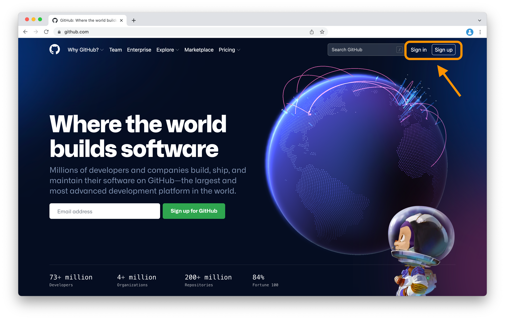
Edit your Profile. GitHub is often used also as an online portfolio. Therefore, it is a good idea to fill our profile with useful information. To do that, click the “Edit profile” button on the profile page or go to “Settings”.
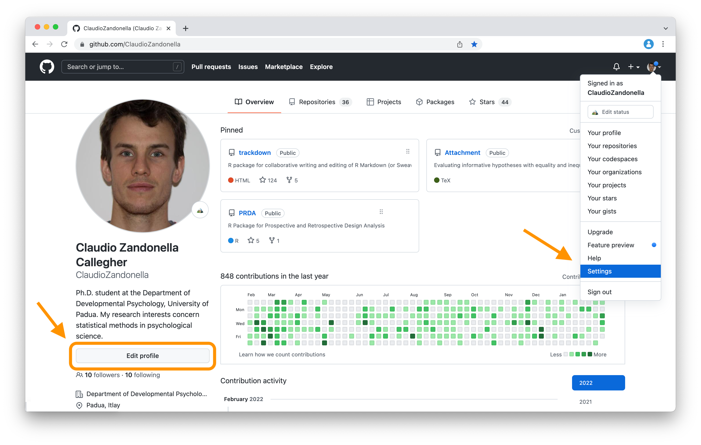
8.1.2 Authentication
When working on a remote repository, we need to authenticate using our password each time we pull from or push to the remote repository. This is extremely annoying. To authenticate without a password we need to use the SSH protocol.
The SSH protocol is based on two keys:
- A private key (
id_rsa) that is saved on our local machine and should never be shared with others. We need to manage it with care. - A public key (
id_rsa.pub) that we share with online services to allow authentication.
SSH protocol allows our machine to communicate with online services without a password only if there is a matching pair of keys.
To enable SSH protocol:
Generate SSH keys. First we need to check if we already have an SSH key-pair available. These are usually saved in the
"~/.ssh/"directory.If no SSH key is available, we can generate a new pair following the instructions at https://docs.github.com/en/authentication/connecting-to-github-with-ssh/generating-a-new-ssh-key-and-adding-it-to-the-ssh-agent. Note that we need to choose instructions according to our operating system. Moreover, if using WLS on Windows, check the dedicated section at https://www.howtogeek.com/762863/how-to-generate-ssh-keys-in-windows-10-and-windows-11/.
Alternatively, we can generate an SSH key-pair directly from RStudio (see Box below).
Copy the Public Key. Next, we need to share our public key with GitHub. By default, our public key is saved at
"~/.ssh/id_rsa.pub". Open the file and copy the public key. We can do that directly from the command line by running,# Windows clip < ~/.ssh/id_rsa.pub # Linux or macOS pbcopy < ~/.ssh/id_rsa.pubOur public key is automatically copied into our clipboard and we can now paste it with
Ctrl + V(command + Vin macOS).Share the Public Key. Now we need to add our public key to our profile on GitHub. To do that, we open our profile settings,
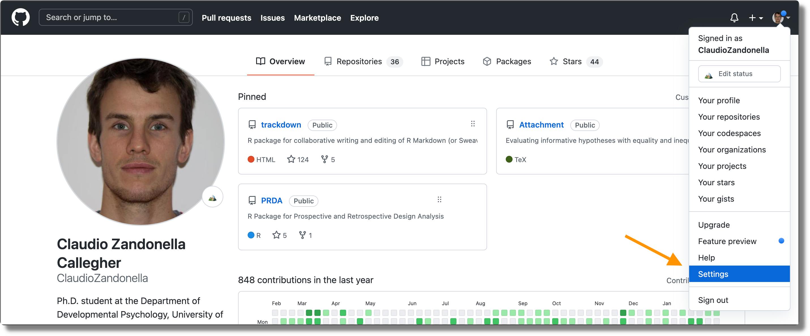 select the “SSH and GPG keys” panel and click on the “New SSH key” button.
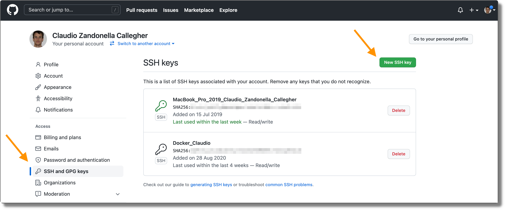 Next, we paste our public key and assign a name. Finally, we press “Add SSH key”.
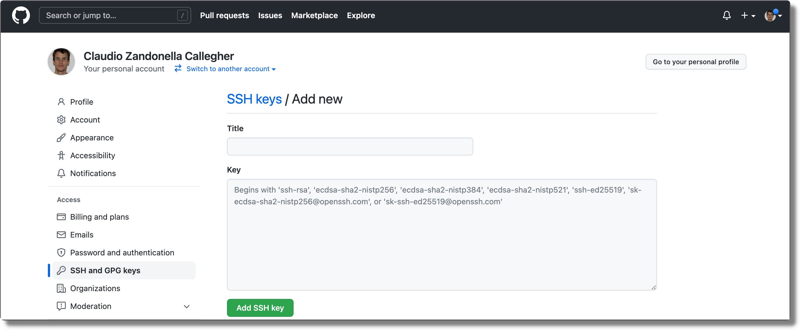
If we work using different machines (e.g., home and office), the best approach is to create a new pair of SSH keys for each machine and add them to our profile using descriptive names.
The private key (id_rsa) is extremely important, as it is used to identify our machine. Therefore we should keep it in a safe place and never share it with others.
In particular, we should pay attention to not sharing our private keys unintentionally by saving them inside directories shared with others or synchronized with cloud services.
If someone manages to copy our private key, it will be able to access all services on which we registered the SSH key pairs.
In RStudio, we can easily view and copy our public SSH key. From Tools > Global Options > Git/SVN, we can view and copy our public SSH key by clicking “View public key”. If SSH keys are not available, we can create a new pair of keys by clicking the “Create RSA Key…” button.
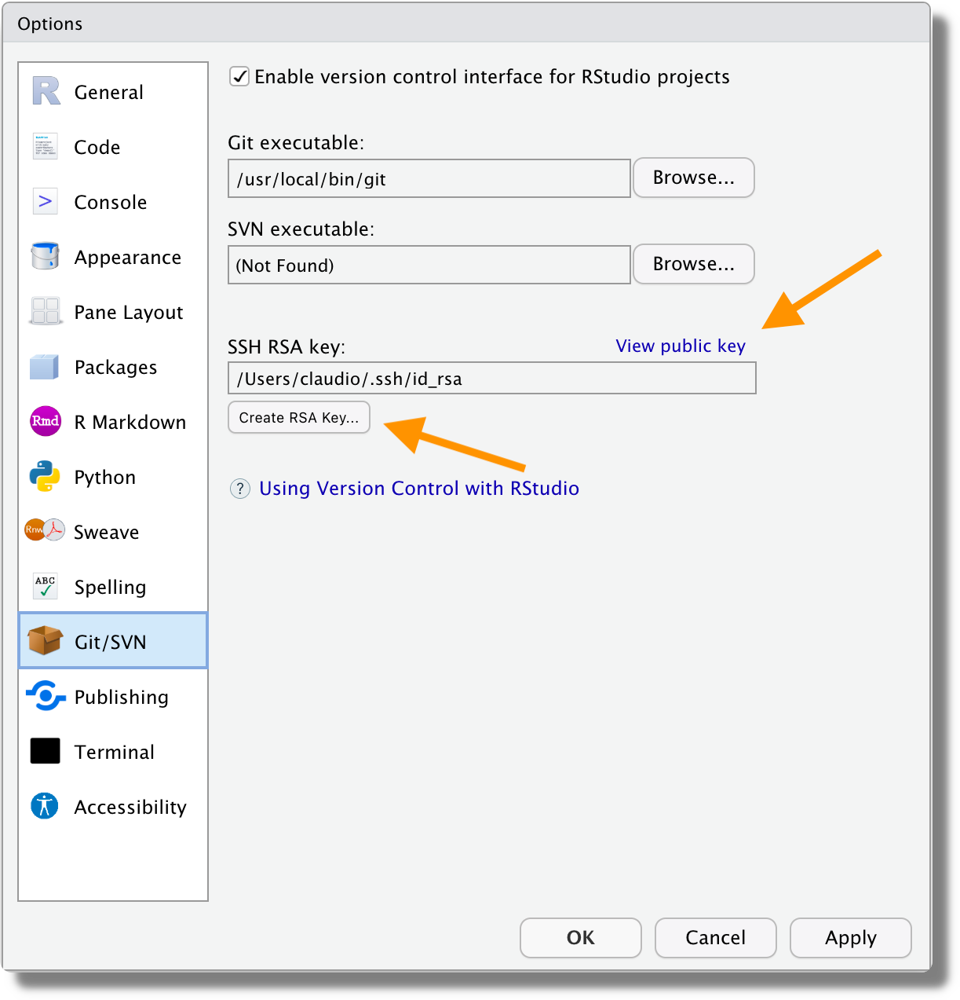
A new pop-up window will appear, and we click “Create”.
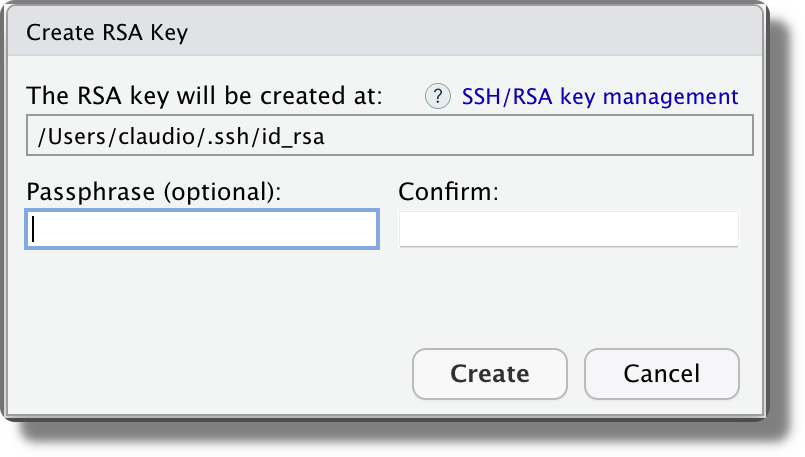
8.1.3 Create a Repository
Ready to create our first remote repository? Here is how to do it:
First, from our profile page we select the “Repositories” tab and then we click the “New” green button.
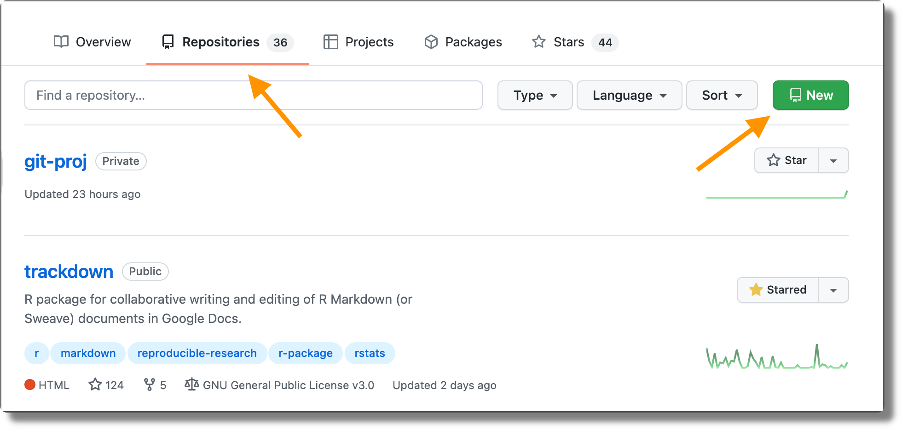
Next we complete a form with all the information about our repository. We need to specify a name for the repository (this has to be unique) and provide a description (optional but recommended if you want to help other users). Importantly, we have to choose the repository visibility:
- Public. Anyone can see (and clone) the repository but only added collaborators can contribute (see Section 8.1.4).
- Private. Only we and added collaborators can see and contribute to the repository.
Moreover, if we are creating a repository from scratch, we can initialize it with some important files (e.g.,
README,.gitignore,LICENSE). We should not add any file if we intend to upload an already existing local repository.Once ready, we press the “Create repository” green button at the bottom. Note that we can also modify repository visibility or any other setting (e.g., name, owner, description, etc.) later from the repository settings.
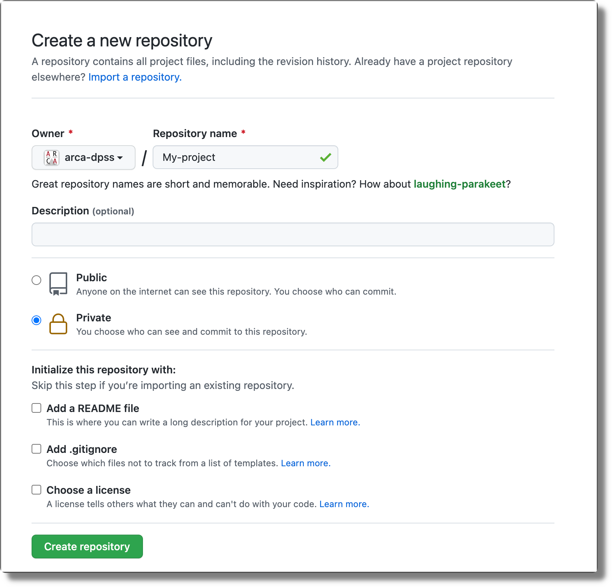
If we create an empty repository, it will display only some useful instructions. In particular, we obtain the remote repository URL that we can now add to our local repository and push all commits using the command,
git remote add origin <URL-repository> git push -u origin masterNote that two options are available:
HTTPSandSSH. We should always select theSSHspecific URL to allow authentication using the SSH protocol and without the password.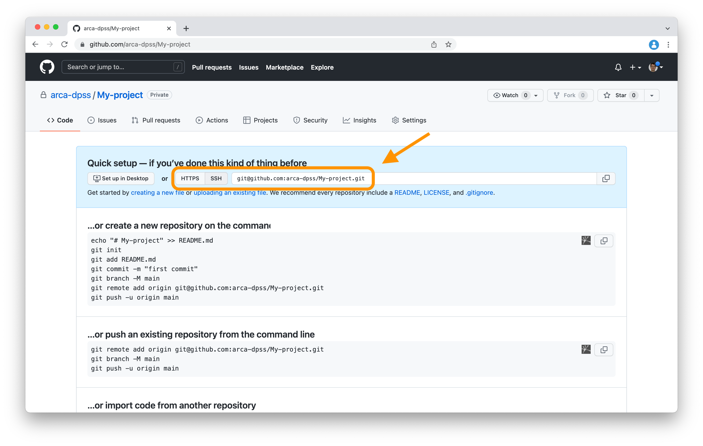
Once we added the remote URL and pushed all commits, all our files will be available online and we can now explore our project directly from GitHub. We can add further details about our repository (e.g., description, website link, or keywords) by clicking the gear icon on the top-right corner.
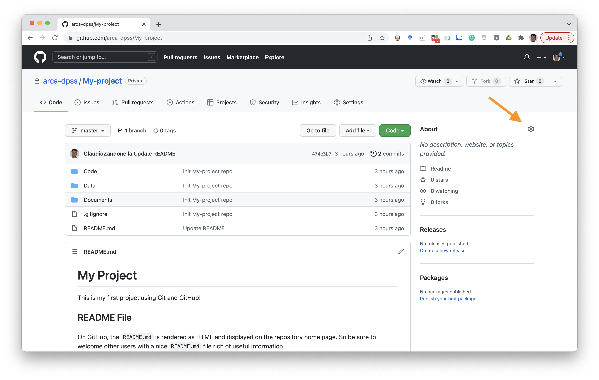
In the case we need the remote URL of any repository available on GitHub, we can obtain it by clicking the “Code” green button. Remember, we should always use the SSH one to allow automatic authentication.
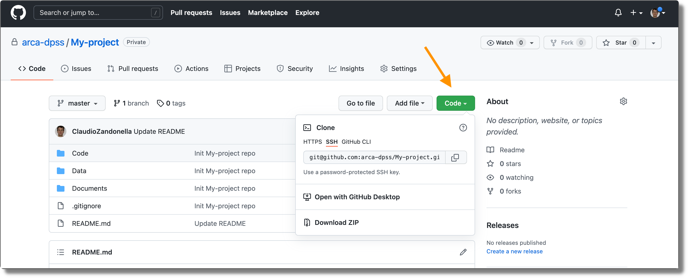
8.1.4 Add Collaborators
Independently of the repository visibility status (private or remote), only the owner and collaborators can contribute directly to a remote repository. Therefore, we need to add our collaborators to allow them to push their commits. To do that:
Open the repository settings and select the “Collaborators and teams” tab. Next, click the “Add people” green button.
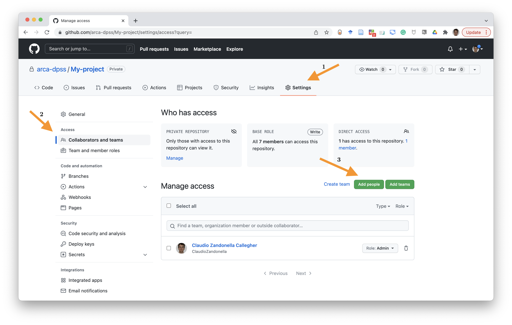
A pop-up window will open allowing us to search and add our collaborators.
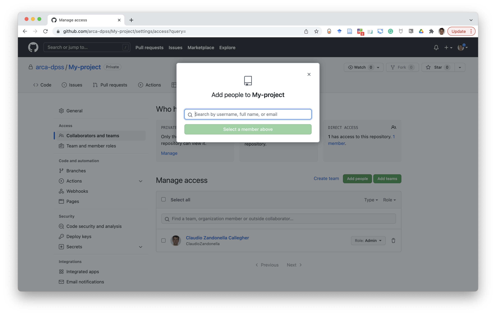
Even if a repository is public, only collaborators can contribute by pushing their commits directly to the repository. Other users from the GitHub community are not allowed to push commits directly to the repository. However, they can still contribute to any public repository using Pull-Requests as described in Section 8.3.2.
Finally, note that, even if we do not have any collaborator on a project, we can still use a remote repository on GitHub as a personal backup or to share the project results with the whole community.
8.2 Main Features
Let’s look at some of the main features of GitHub. Again, there are many things we can do with GitHub. It is worth spending some time reading the official documentation at https://docs.github.com/.
8.2.1 Adding License
GitHub provides many License templates we can use for our repository. To add a license to our repository using a template:
Click the “Add file” button and select “Create new file”
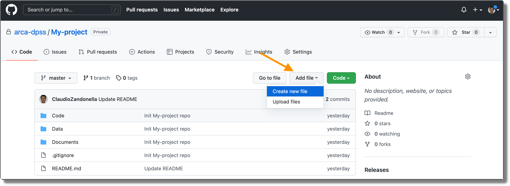
Type
"LICENSE"in the file name field. The button “Choose a license template” will appear. Click it.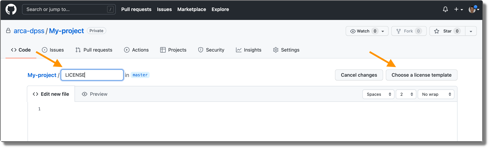
Now we can choose the preferred license and click the “Review and submit” button.
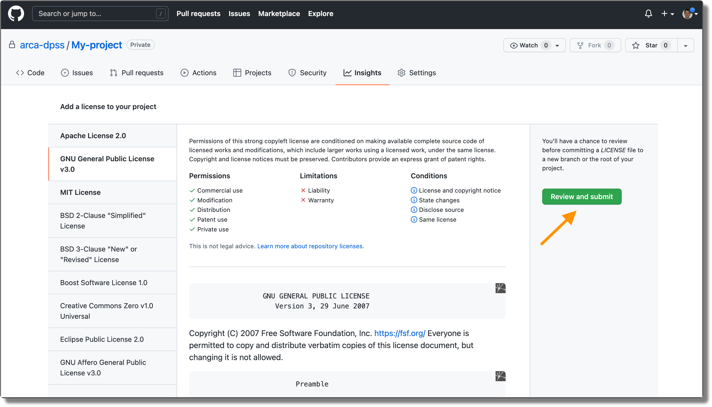
To add the license, we need to create a new commit. We write the commit message and click the “Commit new file” green button. Note that changes will be committed in the remote repository, thus, we need to pull the new commit from the local repository. Moreover, depending on the branch we used, we could be required to merge changes in the principal branch.
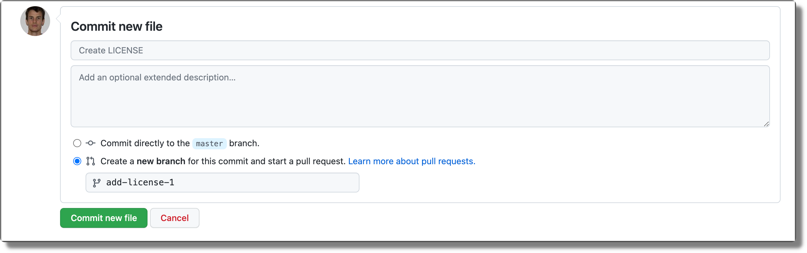
8.2.2 Documentation
GitHub automatically renders any .md file as an HTML allowing us to create nice-looking documentation for our project. In particular, if we include a README.md file in the root directory of our project, this will be displayed on the project homepage.
It is important to always create a README.md file providing an appropriate description of our project and all relevant information. Remember this is the first thing users will see when opening our project. We should use it to grab their attention and make them interested in learning more.
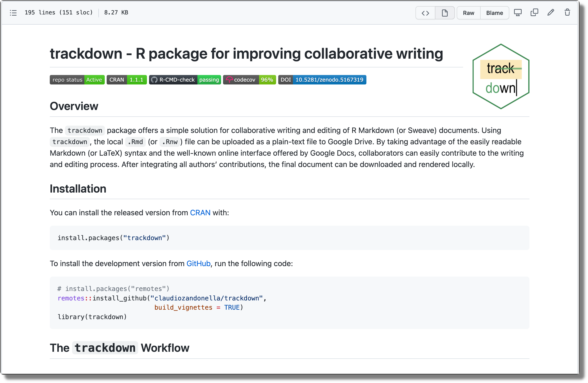
Note that, when navigating between the project directories, GitHub will automatically display any README.md file available in the current directory. We can take advantage of this by adding a README.md file within each directory providing specific information useful to guide other users.
8.2.3 Commit History and Diff
From the repository home page, we can select the specific Git branch from the left drop-down menu and navigate between all our project files. Moreover, we can check the commit history by clicking the clock icon on the right with the number of commits.
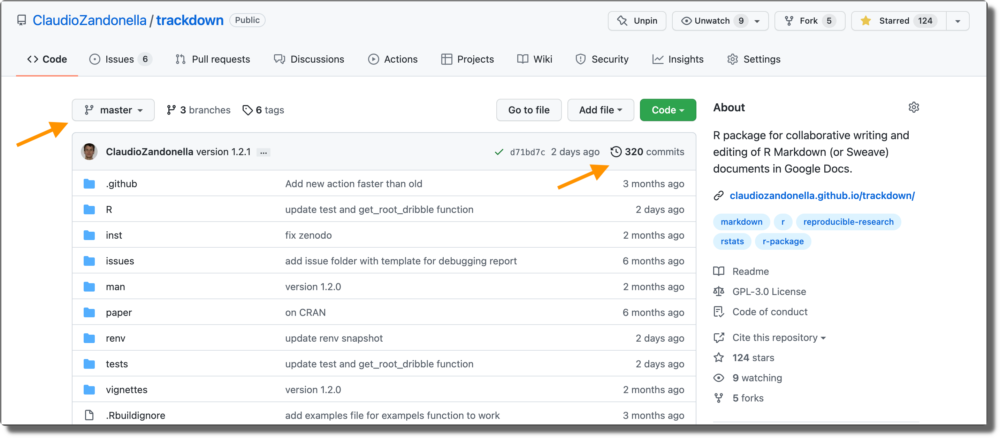
Commit History. We can visualize the commit history of the whole project by selecting a specific branch. Alternatively, if we open the commit history from a single file, we get only the commits relative to that file.
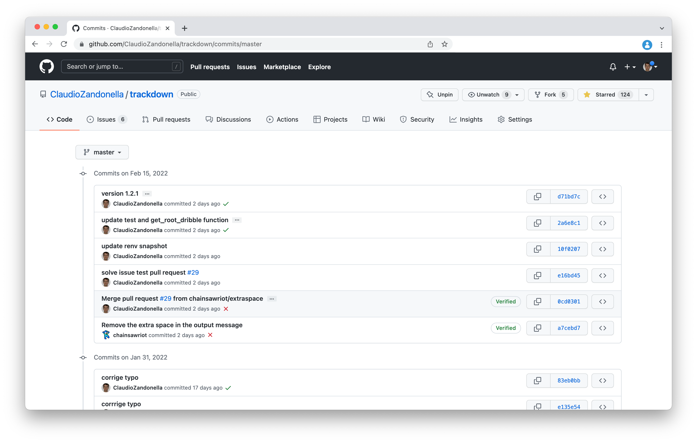
Commit Diff. By clicking a single commit, we get more details together with the specific commit changes for each file.
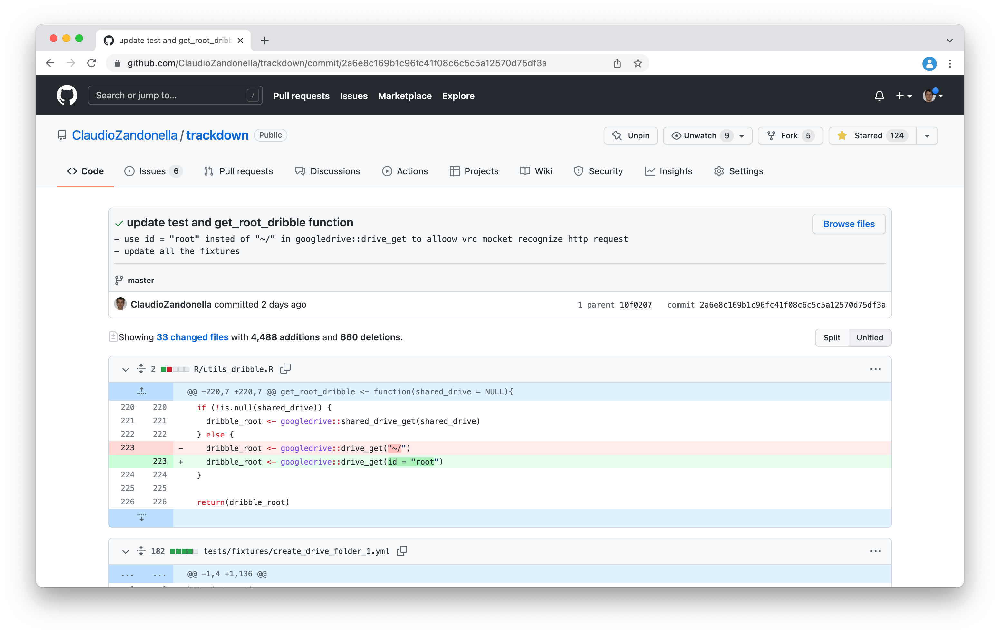
8.2.4 Get DOI
To obtain a DOI for our repository, we need to use Zenodo. Zenodo is a general-purpose open repository developed under the European OpenAIRE program and operated by CERN that allows us to store research materials and creates a DOI for citing the content (from Wikipedia https://en.wikipedia.org/wiki/Zenodo).
To obtain a DOI for our GitHub repository, follow the instructions available at https://docs.github.com/en/repositories/archiving-a-github-repository/referencing-and-citing-content.
8.3 Contributing
One of the greatest things about Open Source is its community. Anyone can contribute to the improvement of Open Source projects and it is a very rewarding feeling. There are two main ways to contribute to someone else repository:
- Issues. Open an issue to report any bug, suggest possible improvements, or propose new features.
- Pull Requests. Contribute directly to project development by sending your code.
Let’s describe these processes in more detail.
8.3.1 Issues
The first way to contribute to a project is to report any bug, suggest possible improvements, or propose new features. On GitHub, we can create an issue describing the bugs or new ideas. To open an issue:
Open the “Issues” tab from the repository homepage.
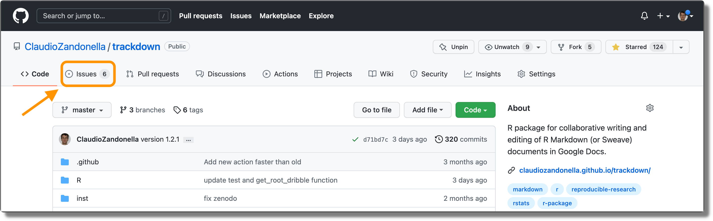
Click the “New issue” green button on the right.
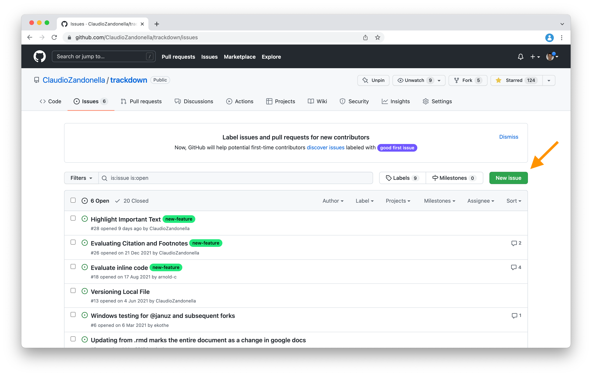
We can now provide all the details about the bugs or the new ideas. If we are reporting some bugs or errors, it is extremely important to provide a minimal working example that allows reproducing the problems. By doing this, we help developers find a solution.
Once an issue is opened, we can write new comments to further discuss the issue with the project maintainers or other issues.
Note that by opening an issue, we do not need to work on the project code ourselves. By opening an issue, we contribute indirectly to the project development simply by reporting bugs or suggesting some improvements. Project maintainers would take care of solving the problems of implementing the new features (if considered appropriate).
Maintainers are usually very friendly and willing to help (they love to know that other people are using their products). However, we should be aware the majority of developers working on open source projects do not get paid for them. Therefore, we must always be nice and patient if we do not get an answer immediately.
Moreover, we should avoid creating duplicate issues. Therefore, before opening a new issue, check if there are similar issues already opened or that have been already answered (remember to check the closed issues as well).
Finally, note that issues are used to report bugs and problems that require modifications of the project code itself. Anything related to the misuse or misunderstanding of the code is better addressed on other websites such as Stack Overflow.
8.3.2 Pull Request
Besides issues, we can also contribute directly to project development by sending our code. However, as discussed in Section 8.1.4, only users added to the repository as collaborators can push their commits directly to the remote repository. So, how can other users contribute to project development? The solution is to fork the repository, make the changes, and create a pull request.
8.3.2.1 Fork and Fetch
Fork. Forking allows us to create a personal copy of any public repository. In this way, we can make the desired changes to our personal copy without affecting the original repository. To create a fork, click the “Fork” button on the top-right corner of the repository homepage. The forked repository is automatically added to our GitHub profile.
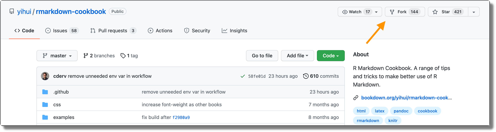
Fetch. Creating a fork is more than a simple copy of a repository. A forked repository always maintains a link to the original repository. This allows us to keep our forked copy up-to-date with the original repository.
If new changes are available in the original repository, we can make them available in our fork by clicking “Fetch upstream” on our forked repository homepage and selecting “Fetch and Merge”.
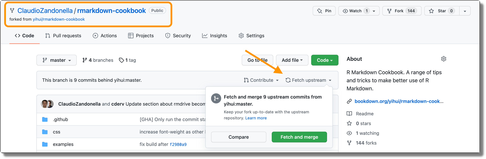
8.3.2.2 Create a Pull Request
Once we made the desired changes and pushed the new commits, these will be available only in our forked repository but not in the original repository. If we want to share our changes with the original repository as well, we can create a “pull request”.
Creating a pull request, we inform the maintainers of the original repository about our changes. Once a pull request is opened, maintainers will evaluate and review our changes and we can discuss them. Maintainers could ask us for further improvements or other modifications and, when everything is ready and stable, they will merge our commits in the original repository.
To create a pull request, open the “Pull request” tab in our forked repository homepage and click the “New pull request” green button.
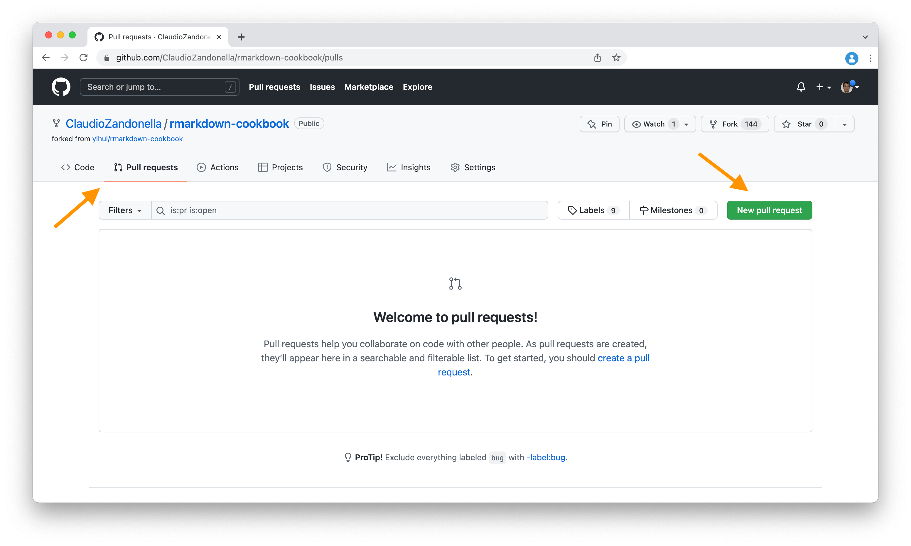
Alternatively, if we just pushed the commits to our remote repository, we can visit the original repository homepage. A message is displayed about our recent push and we can click the “Compare & pull request” green button.
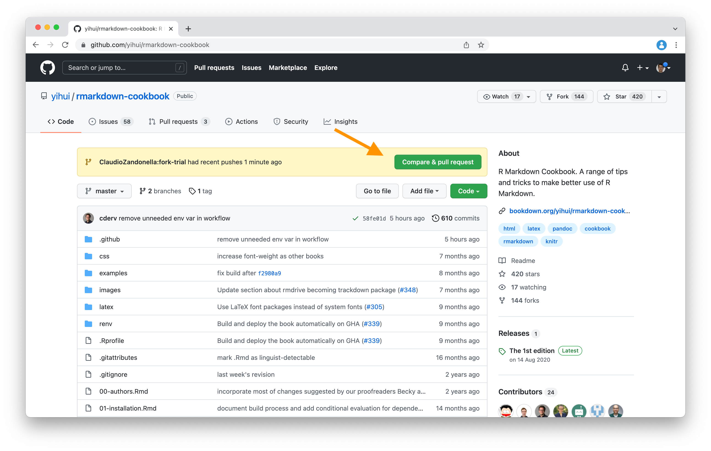
Next, we need to choose the branch in our fork repository from which to pull and the destination branch in the original repository. Finally, we fill the form with all the details about our changes and we click the “Create pull request” green button.
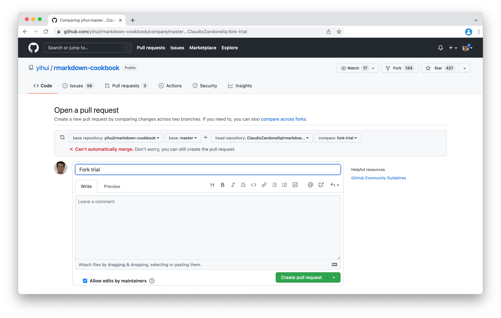
Note that it is called pull request and not push request as we are not pushing to the original repository but the original repository is pulling the commits from our fork.
8.4 Advanced Features
Finally, we briefly present some other very useful but more advanced GitHub features. As always we recommend considering the official documentation at https://docs.github.com/ for all the options and features.
Github Pages. We can create a website directly from our GitHub repository. This is an extremely useful feature for documenting our repository or sharing our results. For example, consider this R package documentation https://claudiozandonella.github.io/trackdown/. Even the online version of this book is hosted by GitHub Pages!
In particular, we can collect all the files used to create the website in a specific project folder or a specific project branch. Github Pages will build the website using a static site generator. By default, GitHub uses Jekyll but we can also use other static site generators.
For more details about GitHub Pages, see the official documentation at https://docs.github.com/en/pages.
Github Actions. We can define a specific set of actions that are automatically executed each time we push new commits to the remote repository (or a specific branch). For example, we could ask Github to run unit tests, compile the documentation, or run the analysis each time we push new commits. These tools are commonly used in the continuous integration and continuous delivery (CI/CD) workflow to automate the process.
For more details about GitHub Actions, see the official documentation at https://docs.github.com/en/actions.
GitHub Gists. If we have some useful snippets of code, we can share them using GitHub Gists. A gist is like a minimal repository for easily sharing code. However, Gists are still Git repositories. Therefore, we can fork or clone any gist and view the commit history.
For more details about GitHub Gists, see the official documentation at https://docs.github.com/en/get-started/writing-on-github/editing-and-sharing-content-with-gists.
GitHub Desktop. GitHub provides a Desktop application to manage the Git and GitHub workflow. For more details about GitHub Desktop, see https://docs.github.com/en/desktop.
GitHub
- GitHub link
https://github.com/
GitHub Extra
- Generate SSH Keys
https://docs.github.com/en/authentication/connecting-to-github-with-ssh/generating-a-new-ssh-key-and-adding-it-to-the-ssh-agent - Add DOI
https://docs.github.com/en/repositories/archiving-a-github-repository/referencing-and-citing-content - GitHub Pages
https://docs.github.com/en/pages - GitHub Actions
https://docs.github.com/en/actions - GitHub Gists
https://docs.github.com/en/get-started/writing-on-github/editing-and-sharing-content-with-gists - GitHub Desktop
https://docs.github.com/en/desktop
OSF and GitHub
- OSF vs GitHub
https://ropensci.org/blog/2020/08/04/osf/ - “Sharing code” by Kubilius (2014)
https://www.ncbi.nlm.nih.gov/pmc/articles/PMC4130510/ - Connect GitHub and OSF
https://help.osf.io/article/211-connect-github-to-a-project.